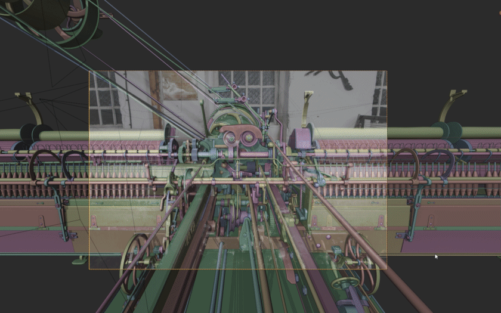
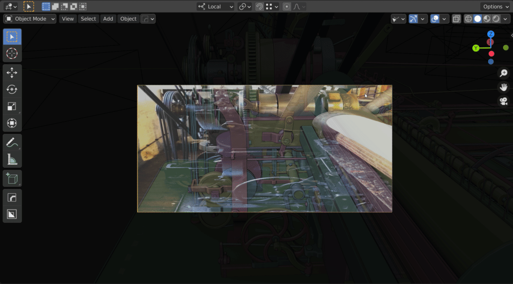

Precise Modeling

Toggle through cameras with different background images and resolutions.
Info
Check out my artstation blog and final project on Artstation for more information on the workflow outlined in this
Having different camera resolutions makes the work with different image planes much easier. You can quickly toggle between the cameras without changing the scene settings every time you change the camera.
Quick Background Image Setting

Adjust the background image visibility directly from the 3D view.
You can toggle the background image on/off directly from the viewport and quickly adjust the opacity. I used these features a lot for my spinning mule project.
Note
The pie menu only considers the first Background Image per camera. This limitation was added to avoid huge lists of background images in the pie menu.
Resolution from Background Image
This feature allows you to easily set the camera resolution based on the assigned background image. The feature is available from:
- Overview Panel (Shift + C)
- Camera Pie (Alt + C)
- Properties Panel: Camera data

Quickly assigning the proper resolution from the background image.
Dolly Zoom
A huge issue when working with image planes it to adjust the camera position, rotation and focal lenght. The dolly zoom is a useful tool to keep the target at the same position when adjusting distance and focal lenght.